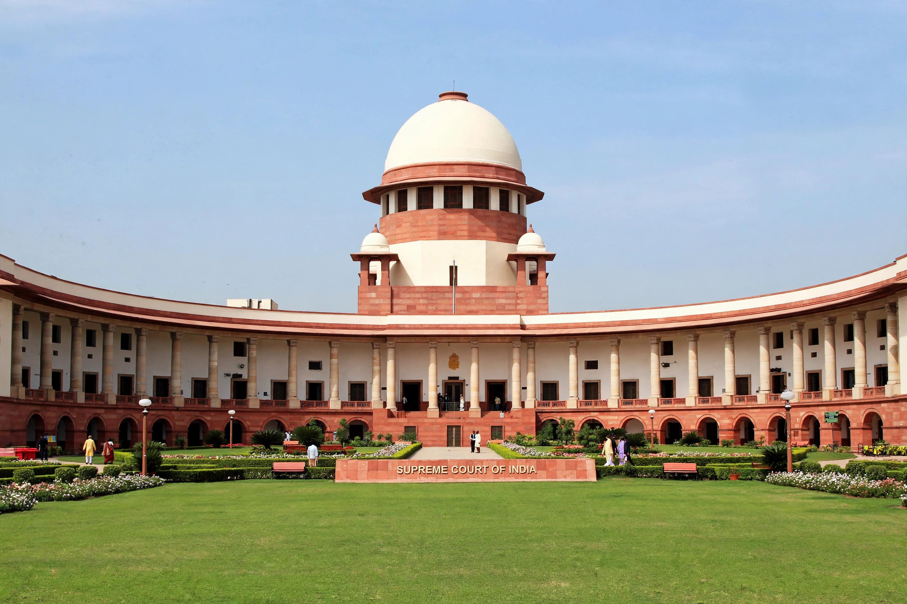

Public interest litigation (PIL) is litigation undertaken to advance a public cause rather than a private grievance. The concept developed most fully in India, where, beginning in the late 1970s, the Supreme Court and the High Courts dramatically relaxed the traditional rule of locus standi, allowing any public-spirited person or organisation to petition on behalf of people too poor, marginalised or unorganised to approach the courts themselves. Petitions may be filed under Article 32 of the Constitution of India in the Supreme Court or Article 226 in a High Court.
PIL emerged after the Emergency of 1975–77, as the judiciary sought to restore its legitimacy and make the fundamental rights in the Constitution meaningful for the disadvantaged. Judges such as Justice V. R. Krishna Iyer and Justice P. N. Bhagwati were its leading architects. The Court even treated letters and postcards addressed to judges as writ petitions — the "epistolary jurisdiction". Early landmarks included Mumbai Kamgar Sabha v. Abdulbhai (1976); Hussainara Khatoon v. State of Bihar (1979), which exposed the plight of undertrial prisoners and established speedy trial as a fundamental right; and Bandhua Mukti Morcha v. Union of India (1984) on bonded labour.
Through PIL, Indian courts addressed prison conditions, police abuse, the environment — the long series of cases brought by lawyer M. C. Mehta produced doctrines such as absolute liability for hazardous industries and protected monuments including the Taj Mahal — occupational health, and sexual harassment at work (Vishaka v. State of Rajasthan, 1997, which laid down binding guidelines later codified by Parliament). PIL later expanded into scrutiny of corruption and governance, contributing to the cancellation of improperly allocated 2G spectrum licences and coal blocks. Critics argue that PIL sometimes encourages judicial overreach into executive functions, burdens the courts with "publicity interest" or frivolous petitions, and invites costs and penalties; courts have responded by penalising abusive filings. The Indian model has been adopted, in adapted forms, in Pakistan, Bangladesh, Nepal, Sri Lanka and South Africa, where the 1996 Constitution confers broad standing for Bill of Rights litigation.